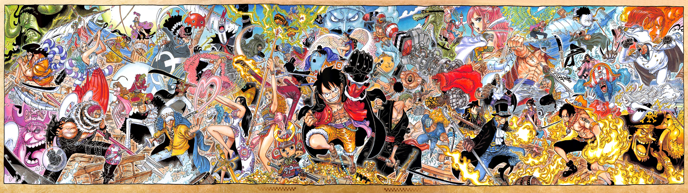

About
Monkey D. Luffy, also known as "Straw Hat" Luffy, is a fictional character and the protagonist in the Japanese manga series One Piece created by Eiichiro Oda. Luffy made his debut as a young boy who acquires the properties of rubber after accidentally eating one of the Devil Fruits.

ONE PIECE
A Japanese manga series written and illustrated by Eiichiro Oda. It has been serialized in Shueisha's shōnen manga magazine Weekly Shōnen Jump since July 1997, with its chapters compiled in 110 tankōbon volumes as of November 2024.
